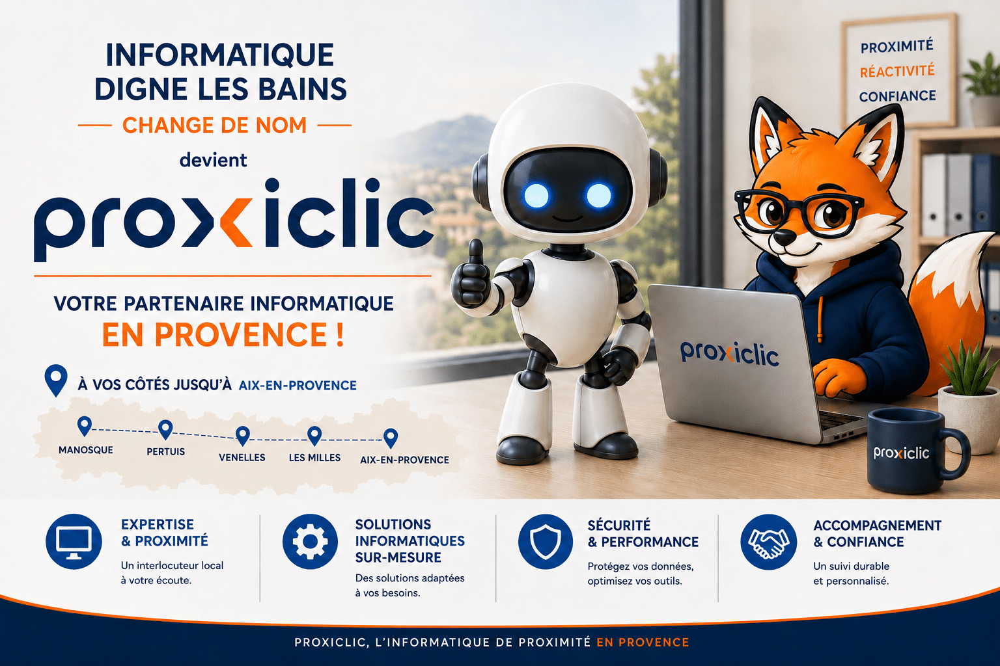
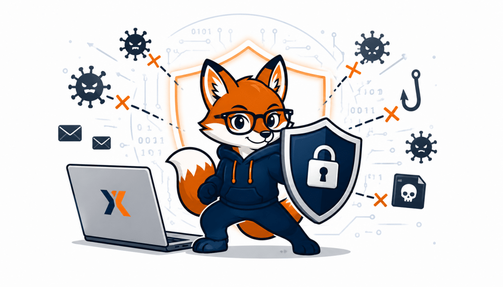
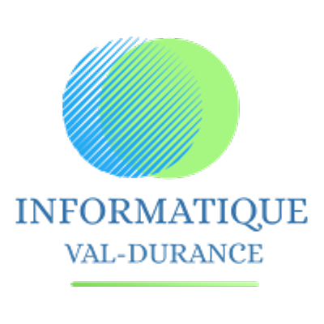
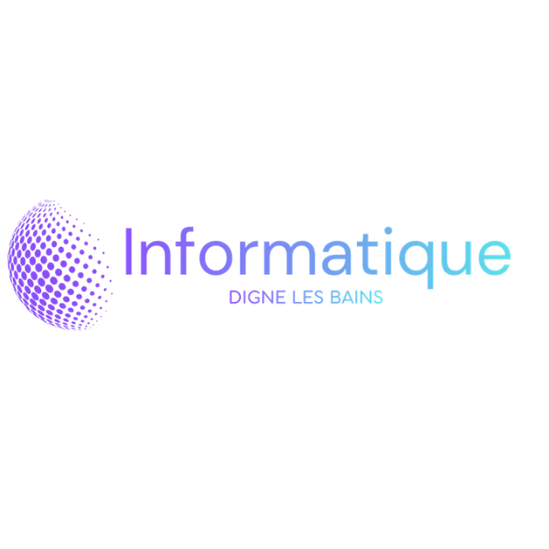

Besoin d'aide avec l'informatique ?
Vous êtes exactement au bon endroit.
Particuliers, seniors ou professionnels — je m'adapte à vous.

Un accompagnement pensé pour chaque profil
Familles & particuliers
Un accompagnement sur-mesure, à domicile, pour toute la famille.
En savoir plus →Entreprises & indépendants
Solutions informatiques dédiées aux professionnels du territoire.
En savoir plus →L'assistance informatique, devient plus simple à domicile.
J'assure une assistance informatique à Digne-les-Bains et dans l'ensemble des Alpes-de-Haute-Provence, auprès des particuliers et des professionnels ayant besoin d'un service informatique de proximité. Cette implantation locale me permet d'intervenir rapidement, aussi bien en zone urbaine qu'en milieu rural, avec une parfaite connaissance des contraintes territoriales du département 04.
Mon assistance informatique à domicile couvre un large éventail de prestations : dépannage informatique, maintenance de systèmes, installation informatique, configuration des réseaux informatiques, accès à internet (ADSL, WI-FI), mise en service de nouveaux équipements et accompagnement à l'utilisation quotidienne des outils numériques. J'interviens sur les ordinateurs portables, PC fixes, imprimantes, périphériques, box internet et autres matériels informatiques.
Dans ce contexte, intervenir seul comporte souvent des risques. Une mauvaise action peut aggraver la panne ou entraîner la perte de données importantes. C'est pourquoi j'interviens en tant que technicienne informatique pour assurer une assistance informatique sécurisée. Je commence par diagnostiquer le système d'exploitation, les logiciels, les composants matériels et les périphériques afin d'identifier précisément l'origine du dysfonctionnement.
Le dépannage informatique à domicile offre un avantage essentiel : intervenir directement sur l'ordinateur à domicile, sans déplacement en magasin informatique. Selon la situation, je peux effectuer une réparation d'ordinateur, une restauration du système, une suppression de malwares, une optimisation des performances ou une récupération de données. Chaque intervention vise à remettre l'ordinateur en état de bon fonctionnement, tout en expliquant clairement les actions réalisées.
Tout ce dont vous avez besoin, c'est une personne qui aime son métier.
Dépannage, maintenance, matériel, formation — on s'occupe de tout.
Dépannage & Réparation
Nettoyage, optimisation, réparation et diagnostic rapide de votre ordinateur.
Maintenance & Support Pro
Assistance rapide à distance ou à domicile pour sécuriser et gérer vos équipements.
Vente de matériel
PC prêts à l'emploi, reconditionnés ou conçus sur mesure selon votre budget.
Imprimantes & Périphériques
Installation, dépannage et configuration de tous vos équipements.
Connexion Internet & Fibre
Optimisation et dépannage de votre connexion et de votre réseau.
Formation aux outils
Accompagnement personnalisé pour mieux utiliser votre ordinateur et vos logiciels.
La technologie devient enfin plus simple.
Dépannage, optimisation et maintenance informatique à domicile.
Une panne informatique peut rapidement perturber votre quotidien, surtout lorsqu'elle bloque totalement l'utilisation de votre ordinateur. Perte d'accès aux fichiers, système ralenti, bug après une mise à jour ou problème logiciel critique : certaines situations nécessitent une assistance informatique rapide et efficace. Dans ces moments-là, la réactivité du service d'assistance devient essentielle pour retrouver un fonctionnement normal dans les meilleurs délais.
Selon l'origine du problème, une assistance informatique à distance peut être proposée. Grâce à des logiciels sécurisés et avec votre autorisation, une prise en main temporaire de l'ordinateur permet d'intervenir rapidement sans déplacement. Cette solution est idéale pour résoudre de nombreux problèmes logiciels, erreurs de configuration, mises à jour bloquées ou réglages système, tout en offrant un gain de temps et une intervention plus immédiate.
Cependant, lorsque le problème est matériel ou plus complexe, une intervention informatique à domicile reste indispensable. Le choix entre assistance à distance et déplacement dépend donc du diagnostic initial. Concernant les tarifs d'intervention, ceux-ci varient selon plusieurs critères : type de panne, durée de l'intervention, niveau d'urgence et mode d'assistance. Une tarification claire et expliquée à l'avance permet aux particuliers de faire un choix éclairé.
L'objectif d'une assistance informatique en urgence est toujours le même : rétablir un usage normal de l'ordinateur le plus rapidement possible, tout en garantissant la sécurité des données et la fiabilité des solutions mises en place.
Des solutions informatiques pensées pour vous.
Le dépannage informatique et la maintenance des ordinateurs sont deux services complémentaires qui permettent d'assurer la stabilité et la performance des équipements informatiques. Le dépannage intervient lorsqu'un problème est déjà présent, tandis que la maintenance vise à prévenir les pannes et à limiter les dysfonctionnements futurs. Ensemble, ils garantissent un bon fonctionnement durable du matériel informatique, aussi bien pour un PC Windows que pour un Mac.
La maintenance informatique comprend plusieurs actions essentielles : mises à jour du système d'exploitation, vérification des logiciels installés, optimisation des performances, nettoyage des fichiers inutiles et contrôle des paramètres de sécurité. Ces opérations permettent de réduire les ralentissements, d'éviter les erreurs système et de prolonger la durée de vie de l'ordinateur.
Le dépannage informatique, quant à lui, intervient en cas de dysfonctionnement avéré. J'analyse alors l'état du matériel, les composants, les périphériques et les paramètres du système afin d'identifier précisément la cause du problème. Cette approche méthodique permet de proposer une réparation informatique ciblée, sans remplacement inutile de pièces.
Associer dépannage et maintenance permet d'adopter une approche préventive, particulièrement recommandée pour les particuliers souhaitant utiliser leur ordinateur de manière fiable et sereine sur le long terme.
Une panne, un doute, un besoin de maintenance ?
Diagnostic à distance ou intervention à domicile à Digne-les-Bains et dans les Alpes-de-Haute-Provence.
Une assistance informatique plus humaine et engagée.
Dépannage, maintenance, matériel et accompagnement.
L'assistance informatique à domicile pour les particuliers permet de bénéficier d'un accompagnement personnalisé, directement chez soi, dans un environnement familier. Ce type de service à la personne est particulièrement adapté aux utilisateurs qui ne souhaitent pas transporter leur matériel informatique ou qui ont besoin d'une aide concrète et rassurante. Intervenir à domicile me permet d'analyser les usages réels et d'adapter les solutions proposées au quotidien de chaque utilisateur.
J'assure une assistance informatique pour de nombreux besoins : utilisation d'internet à domicile, gestion des emails, installation de logiciels, paramétrage du système informatique, mise en service d'un nouvel ordinateur, connexion des imprimantes ou tablettes, et résolution de problèmes récurrents. Cette approche vise à simplifier l'usage de l'ordinateur et à réduire les blocages liés à l'informatique.
Au-delà du dépannage, l'assistance informatique à domicile inclut également un volet pédagogique. J'explique les manipulations, je clarifie les termes techniques et je donne des repères simples pour gagner en autonomie. Ce service s'adresse notamment aux seniors, aux personnes peu à l'aise avec l'informatique ou à toute personne souhaitant mieux comprendre ses outils informatiques. Selon les conditions en vigueur, cette assistance informatique à domicile peut ouvrir droit à une réduction ou un crédit d'impôt, ce qui en fait une solution accessible et avantageuse pour les particuliers.
Contactez-moi — Une assistance près de chez vousL'humain au cœur de l'assistance informatique.
Je propose une assistance informatique claire, accessible et compréhensible, sans vocabulaire technique inutile. L'informatique peut rapidement devenir source de stress lorsque les termes employés sont trop complexes ou que les explications manquent de clarté. Mon rôle consiste donc autant à résoudre les problèmes qu'à expliquer simplement les solutions mises en place.
Chaque assistance informatique est adaptée au niveau de compréhension de la personne accompagnée. Je prends le temps d'expliquer les manipulations, de reformuler si nécessaire et de vérifier que les actions réalisées sont bien comprises. Cette pédagogie favorise l'autonomie et permet aux particuliers de mieux utiliser leur ordinateur, leur connexion internet ou leurs logiciels au quotidien.
L'aspect humain est central dans ma manière de travailler. Une assistance informatique à domicile permet d'instaurer une relation de confiance, basée sur l'écoute et la patience. Contrairement à une assistance à distance impersonnelle ou à une hotline, l'intervention à domicile facilite les échanges et la compréhension des besoins réels.
Un support informatique fiable pour votre activité.
Maintenance, dépannage et sécurité pour les artisans, indépendants et petites entreprises des Alpes-de-Haute-Provence.

Un dépanneur informatique de proximité pour votre entreprise
À Digne-les-Bains comme dans les autres communes des Alpes-de-Haute-Provence, une entreprise ou un indépendant ne peut pas se permettre de rester bloqué par une panne informatique. Un poste de travail hors service, un logiciel de facturation inaccessible ou une connexion internet défaillante peuvent rapidement ralentir une activité, retarder un rendez-vous client ou bloquer une commande. Proxiclic-Provence propose un accompagnement informatique de proximité, pensé pour les artisans, commerçants, professions libérales et petites structures du territoire, de Digne-les-Bains à Manosque, en passant par Sisteron et Forcalquier.
Maintenance préventive et dépannage rapide
Pour un professionnel, la maintenance informatique n'est pas une option mais une nécessité. Elle permet de limiter les interruptions d'activité en anticipant les pannes plutôt qu'en les subissant : mises à jour régulières, vérification des sauvegardes, contrôle des performances et surveillance des équipements sensibles (ordinateurs, imprimantes, box internet). Lorsqu'un incident survient malgré tout, une intervention rapide à distance ou à domicile permet de rétablir l'activité dans les meilleurs délais, avec un diagnostic clair et une solution adaptée au budget de chaque structure.
Sécurité des données professionnelles
Les données d'une entreprise — factures, fichiers clients, comptabilité — représentent un enjeu important en cas de panne ou de piratage. Proxiclic-Provence met en place des solutions de sécurité adaptées aux petites structures : antivirus, pare-feu, sauvegardes régulières et bonnes pratiques numériques, sans complexité inutile ni investissement disproportionné pour une petite entreprise.
Du matériel adapté à votre budget
Ordinateur reconditionné pour un poste secondaire, configuration sur mesure pour un usage professionnel intensif, ou simple mise à niveau d'un équipement existant : le choix du matériel est toujours guidé par l'usage réel de l'entreprise et par son budget, sans surdimensionnement.
Un accompagnement adapté à chaque activité
Artisans & indépendants
Un poste de travail fiable, une connexion stable, un interlocuteur unique en cas de souci.
Commerçants
Caisse, imprimante, réseau : des équipements maintenus pour ne jamais interrompre le service client.
Professions libérales
Sécurité des données clients et continuité d'activité, avec des explications claires et sans jargon.
Un besoin informatique pour votre entreprise ?
Intervention à distance ou à domicile professionnel, à Digne-les-Bains et dans tout le 04.
Une protection numérique pensée pour vous.
La sécurité informatique et la protection des données personnelles sont devenues des enjeux majeurs pour les particuliers. J'interviens pour renforcer la sécurité des systèmes informatiques de manière simple et efficace : mise à jour du système, antivirus fiable, pare-feu et sauvegardes adaptées.
Solutions maîtrisées
Interventions fiables, durables et adaptées à chaque situation.
Pédagogie & patience
Des explications claires, sans jargon, à votre rythme.
Confiance & sécurité
Respect des données, confidentialité et transparence.
Proximité
Une présence humaine, locale et disponible.
La sécurité informatique et la protection des données personnelles sont devenues des enjeux majeurs pour les particuliers. Les ordinateurs contiennent aujourd'hui des documents administratifs, des photos, des emails et parfois des données bancaires. Une mauvaise configuration ou un manque de vigilance peut exposer ces informations à des risques importants, comme les virus, les logiciels espions ou les tentatives de fraude en ligne.
Dans le cadre de mon assistance informatique, j'interviens pour renforcer la sécurité des systèmes informatiques de manière simple et efficace. Cela passe par la mise à jour régulière du système d'exploitation, l'installation d'un antivirus fiable, la configuration d'un pare-feu et la mise en place de sauvegardes adaptées. Ces actions permettent de protéger les données sans complexifier l'utilisation de l'ordinateur.
La protection des données ne repose pas uniquement sur des outils techniques. Elle dépend également des habitudes de l'utilisateur. J'explique comment reconnaître les emails frauduleux, éviter les sites à risque et adopter de bonnes pratiques lors de la navigation sur internet. Cette approche pédagogique permet aux utilisateurs de mieux comprendre les risques et de devenir plus autonomes face aux menaces numériques.
Ainsi, la sécurité informatique s'inscrit dans une démarche globale, associant prévention, accompagnement et sensibilisation. L'objectif est de garantir un usage serein de l'ordinateur tout en protégeant efficacement les données personnelles sur le long terme.
Votre dépanneur informatique, proche de vous.
Une assistance humaine, réactive et pensée pour simplifier votre quotidien numérique.
Basée à Digne-les-Bains, j'interviens en tant que dépanneur informatique auprès des particuliers et des professionnels du secteur. Cette implantation locale me permet d'assurer une réelle réactivité et de proposer un service informatique de proximité, adapté aux besoins du territoire des Alpes-de-Haute-Provence. Être dépanneur informatique, c'est avant tout être disponible, à l'écoute et capable d'intervenir efficacement.
J'assure le dépannage informatique, la réparation d'ordinateurs, la maintenance des systèmes et l'installation de matériel informatique. J'interviens aussi bien sur les PC Windows que sur les Mac, les ordinateurs portables ou les postes fixes. Chaque intervention commence par une analyse précise de la situation afin de proposer une solution adaptée, sans action inutile.
Faire appel à un dépanneur informatique local permet de bénéficier d'un suivi personnalisé. Je connais les équipements, les usages et les problématiques récurrentes rencontrées par les utilisateurs de la région. Cette connaissance du terrain facilite les interventions et améliore leur efficacité.
Contactez-moi — Une question ? Je vous accompagneDans l'ensemble des Alpes-de-Haute-Provence, jusqu'au Pays d'Aix.
Dans la majorité des situations, le dépannage informatique peut être réalisé à distance. Rapidement, simplement et en toute sécurité, vous bénéficiez d'une assistance efficace sans avoir à vous déplacer.
Lorsque l'intervention à distance n'est pas possible, notamment en cas de problème matériel ou de panne plus complexe, je me déplace directement à votre domicile ou dans vos locaux professionnels.
Parce qu'un service informatique de proximité reste essentiel, les déplacements concernent aussi les communes rurales et les villages plus isolés de la région.
- Digne-les-Bains
- Sisteron
- Château-Arnoux-Saint-Auban
- Oraison
- Manosque
- Forcalquier
- Pertuis
- Venelles
- Lambesc
- Saint-Cannat
- Aix-en-Provence / Les Milles
- Communes rurales du 04
De la Durance à Proxiclic : l'évolution de l'entreprise
Rétrospective de l'entreprise individuelle de Didier Lapaillerie : de ses débuts ruraux près de la Durance à sa transformation en enseigne numérique moderne à Digne-les-Bains, chaque étape marque un changement de nom et d'identité.

L'ancrage local initial
12 Rue Bonne Fontaine, 04190 Les Mées
L'entreprise naît officiellement le 2 janvier 2019 aux Mées. Le nom d'origine évoque la proximité géographique avec la vallée de la Durance, ciblant une assistance informatique de terrain pour les particuliers et professionnels des communes rurales du secteur.
Logo d'époque retrouvé — archive graphique authentique
La clarté géographique
11 Traverse des Roses, 04000 Digne-les-Bains
Le 10 octobre 2023, à la suite d'un transfert d'activité, Didier Lapaillerie s'installe au cœur de la préfecture des Alpes-de-Haute-Provence. L'identité commerciale devient totalement explicite et épurée pour s'adresser directement aux Dignois.
Logo d'époque retrouvé — archive graphique authentiqueLe renard numérique 🦊
2 Rue Prête à Partir, 04000 Digne-les-Bains
Le 1er février 2026, l'entreprise adopte sa marque actuelle. À l'image de la Caisse d'Épargne et de son écureuil symbole de prévoyance, l'identité visuelle de Proxiclic-Provence se modernise radicalement autour d'une mascotte de renard stylisée — ruse, rapidité d'intervention et agilité face aux pannes technologiques. Le nom fusionne « Proximité » et « Clic » pour refléter une assistance connectée.
Découvrir Proxiclic aujourd'huiUne histoire vérifiée, une identité authentique
Les dates, adresses et dénominations successives sont vérifiées via le registre officiel des entreprises (Pappers / SIRET 315 087 767). Les trois logos présentés sont les visuels réels utilisés par l'entreprise à chaque époque — retrouvés via les archives Canva et les annuaires professionnels en ligne — et non des reconstitutions.
Sources : Pappers — fiche entreprise Lapaillerie Didier · ToutLe04 — annuaire Informatique Val-Durance
Une question ? Je vous accompagne.
Basée à Digne-les-Bains, j'interviens à distance et à domicile dans tout le 04, jusqu'au Pays d'Aix.